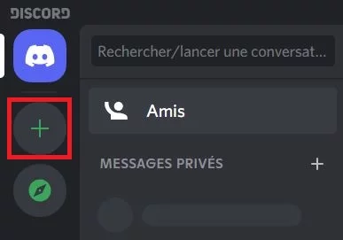

Voici un easter egg qui apparaît lorsqu'une page recherchée n'apparaît pas.A la place d'une page affichant une erreur 404,un magasin apparaît et en cliquant sur le serpent le jeu se lance


Tout d'abord qu'est-ce qu'un easter egg? C'est un secret enfoui dans un jeu ou un site posé par les dévelopeurs pour s'amuser, laisser mystère ou simplement pour que les joueurs le cherchent. La plupart des easters eggs ne peuvent etre repérés qu'en cherchant par des endroits ou on n'irait pas forcément ou qu'on ne prêterait pas attention et parfois même dans des endroits qui sont inaccessibles, mais les joueurs utilisent des bugs ou des glitchs pour y accéder.
Voici un easter egg qui apparaît lorsqu'une page recherchée n'apparaît pas.A la place d'une page affichant une erreur 404,un magasin apparaît et en cliquant sur le serpent le jeu se lance
Quand on clique 6 fois d'affilé sur le logo Discord dans la page amis,à chaque ouverture du site une voix robotique aigüe dira:"Discord"
Quand on copie le code ami d'un utilisateur un message apparaît montrant:"collé" cependant si on le recopie plusieurs fois le message augmente en intensité allant de copié à plus que divin.
Discord à plusieurs utilisations mais celle qui domine c'est celle des serveurs,modérateurs et clients. Les serveurs Discord sont fondamentaux dans cette communauté et ils en existent plusieurs types(groupes d'amis,jeux,jdr) et tous ont leurs propres règles et obligations. Pendant une période les serveurs ont même beaucoup servi pour aider les personnes à échanger des informations et communiquer.
Dans les serveurs des codeurs créent des bots avec un programme spécifique pour les aider, ils accomplissent leur mission et ils ont toutes sortes de tâches avec des permissions comme le ban pour langage grossier,description des règles aux nouvelles personnes sur le serveur ainsi de suite.Tous les ordres et permissions donnés aux bots sont programmés par des codeurs à travers des programmes comme Visuel Studio code grâce à cela,les serveurs Discord sont plus faciles à gérér.
Pendant la Covid-19 et le confinement Discord aida les enseignants à donner cours aux élèves en augmentant la limite des personnes sur un Go Live. De plus, Discord aida en créant des serveurs spécifiques pour des matières et en utilisant les vocaux pour communiquer.